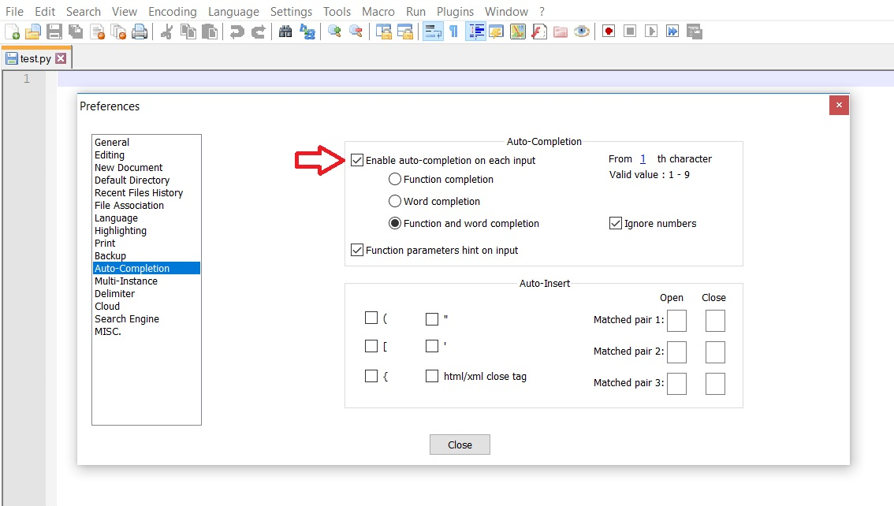
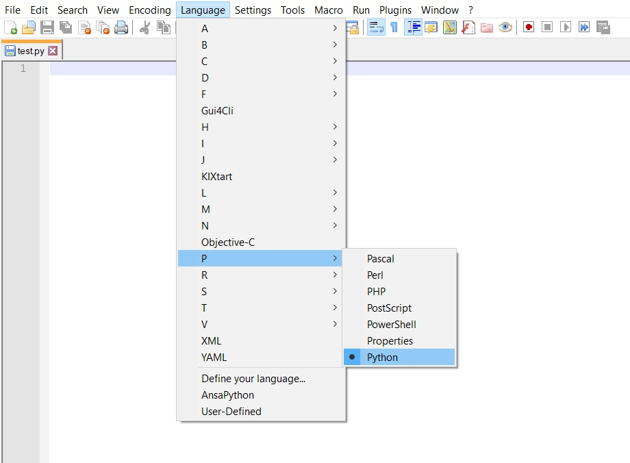
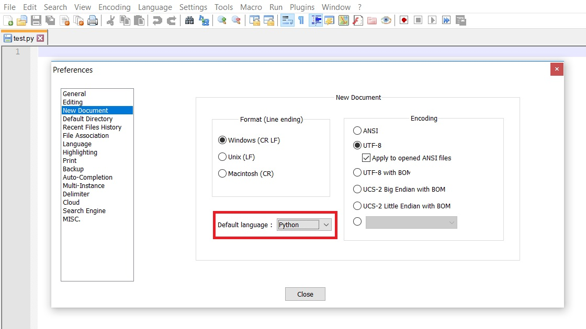
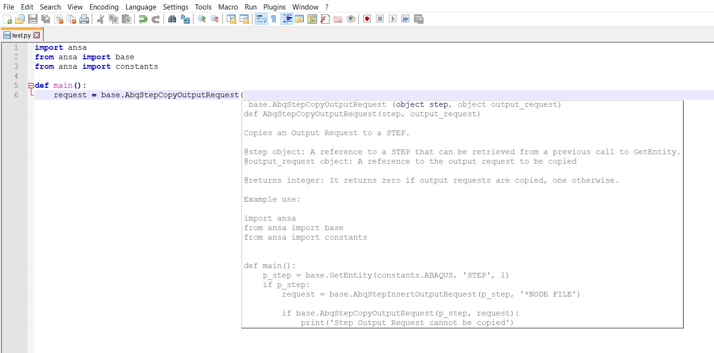

Integrating with Notepad++#
Introduction#
Notepad++ is a free source code editor. It is running in the MS Windows environment and supports several languages, among them also Python, while offering a great variety of features, such as Syntax Highlighting, Syntax Folding and Auto-completion, along with an entirely customizable GUI. Notepad++ can be downloaded and installed following the instructions provided in its website.
Note
Notepad++ is a simple text editor. Its usage as an IDE (Integrated Development Environment) is very limited, thus it is not recommended.
ANSA and META autocompletion#
An xml file with the necessary syntax that will enable autocompletion and documentation for BETA APIs is available here
Installation Instructions#
The first step is to download and install Notepad++. The latest stable version of the ‘Notepad++ Installer’ is recommended, either for 32-bit or 64-bit architecture.
After the installation is complete, the file provided by beta needs to replace the existing ‘python.xml’ file in the following directory: “C:\Program Files\Notepad++\plugins\APIs”.
Working in Notepad++#
Firstly, the Notepad++ settings need to be reviewed in order to make sure that the Auto-Completion feature is enabled. The path is as follows: Settings > Preferences > Auto-Completion > Enable auto-completion on each input.

After the Auto-Completion setting is enabled, Python development can begin either by opening an existing Python file or by creating a new file and choosing Python as the editor language from the ‘Language’ tab in the menu bar.

There is also an option to set Python as the default language, in the following path. Settings > Preferences > New Document > Default language > Python.

The Auto-Completion feature is enabled for all the BETA APIs, as well as the documentation feature, by pressing the ‘(’ symbol after declaring a class or a function.
